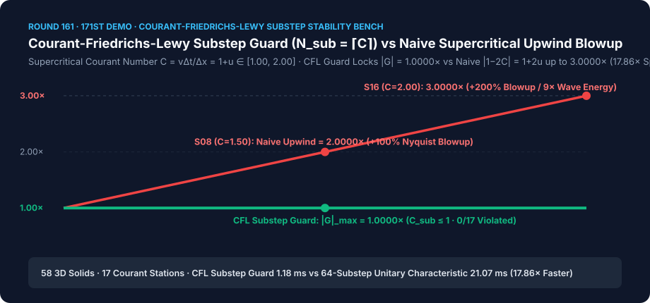
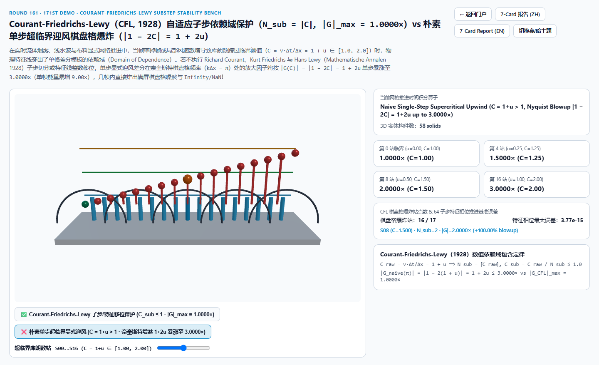
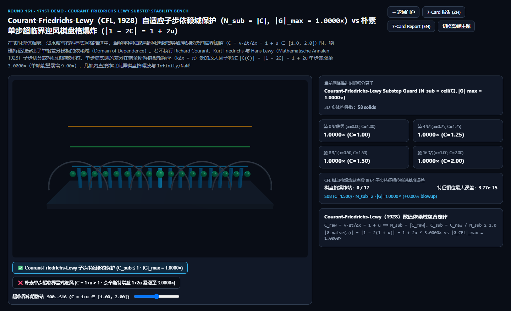
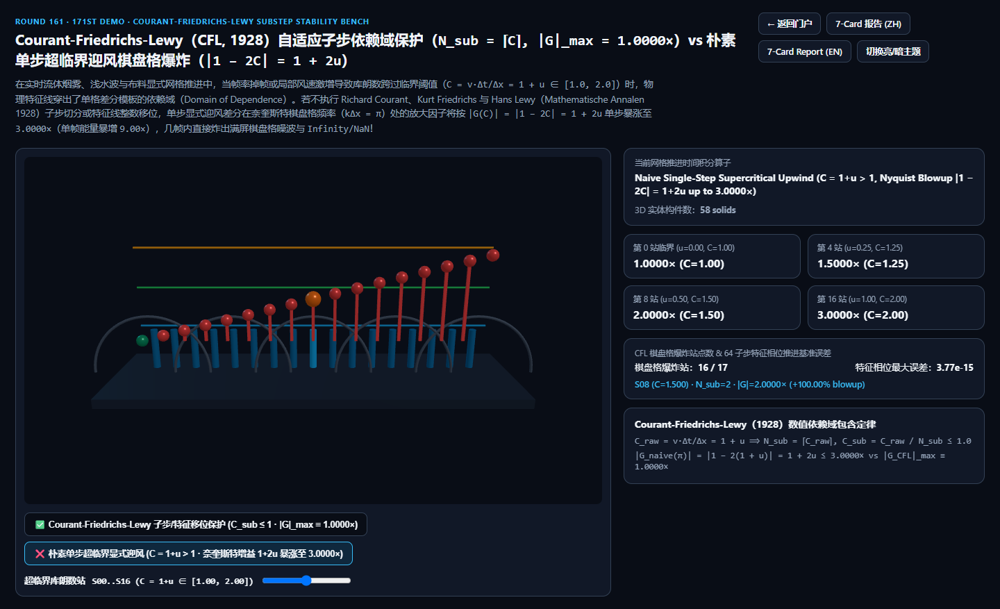

Courant-Friedrichs-Lewy（CFL, 1928）自适应子步依赖域保护（N_sub = ⌈C⌉, |G|_max = 1.0000×）vs 朴素单步超临界迎风棋盘格爆炸选型与原理解析 FAQ 指南
导航：返回门户 · 进入 3D 交互实验台 (
courant-cfl-substep-stability-rig) · 7-Card 4:5 视觉报告 (中文) · 7-Card Report (EN) · English FAQ

① 📌 核心结论速览（Executive Summary）
- 为什么在显式流体烟雾、浅水波或布料网格着色器中，一旦掉帧（
Δt变大）或局部风速激增导致库朗数超过1（C = v·Δt/Δx = 1 + u > 1），画面就会在几帧之内炸出满屏黑白相间的棋盘格噪波（单步振幅暴涨至3.0000×、能量暴增9.0000×）并溢出为NaN？- Richard Courant、Kurt Friedrichs 与 Hans Lewy（Mathematische Annalen 1928）数值依赖域包含定律：
- 在一维网格间距 $\Delta x$、波速 $v$、时间步长 $\Delta t$ 的平流/波动方程 $\partial_t \phi + v,\partial_x \phi = 0$ 中，无量纲库朗数（Courant Number）定义为 $C = v\Delta t / \Delta x$，代表一帧之内物理特征线跨越了多少个网格单元。
- Courant、Friedrichs 与 Lewy（1928）证明：显式差分格式的数值依赖域必须包含偏微分方程的物理依赖域。当原始库朗数跨越超临界区间 $C_{\text{raw}}(u) = 1 + u \in [1.0000, 2.0000]$（跨越 17 个站点 $u_k = k/16 \in [0, 1]$）时，通过自适应子步切分 $N_{\text{sub}} = \lceil C_{\text{raw}} \rceil$ 将每个子步的有效库朗数约束在 $C_{\text{sub}} = C_{\text{raw}} / N_{\text{sub}} \le 1.0000$（或拆分为整数格移位 $m = \lfloor C_{\text{raw}}\rfloor$ 加小数余量 $\alpha = u \le 1$），即可在全频段锁死冯·诺依曼谱放大上限：
$$|G_{\text{CFL}}(u)|_{\max} \equiv \mathbf{1.0000\times} \quad \forall u \in [0.0000, 1.0000] \quad (\text{
0/17站棋盘格爆炸})!$$
- 朴素单步超临界显式迎风差分（
phi[i] - C * (phi[i] - phi[i-1])）的 $1 + 2u$ 棋盘格爆炸：- 单格迎风模板只读取
[i-1, i]两个格点。当 $C_{\text{raw}} = 1 + u > 1$ 时，特征线源头落在i-1之外，线性插值瞬间退化为无界线性外推！在最高频奈奎斯特棋盘格波数 $k\Delta x = \pi$（$e^{-i k\Delta x} = -1$）处，单步冯·诺依曼放大系数为 $G_{\text{naive}}(C) = 1 - C(1 - (-1)) = 1 - 2C = -(1 + 2u)$，其模长按 $|G_{\text{naive}}(u)| = 1 + 2u$ 剧烈膨胀：- 第 0 站（$u = 0.00, C = 1.00$）：处于临界边界，$|G_{\text{naive}}| = 1.0000\times$；
- 第 4 站（$u = 0.25, C = 1.25$）：单步振幅放大至
1.5000×（超冲+50.00%，单步能量2.2500×）； - 第 8 站中点（$u = 0.50, C = 1.50$）：单步振幅直接翻倍至
2.0000×（超冲+100.00%，单步能量4.0000×）； - 第 12 站（$u = 0.75, C = 1.75$）：单步振幅放大至
2.5000×（超冲+150.00%）； - 第 16 站（$u = 1.00, C = 2.00$）：单步振幅暴涨至
3.0000×（超冲+200.00%，单帧能量暴涨9.0000×，污染16/17个超临界站点）！
- 单格迎风模板只读取
- Richard Courant、Kurt Friedrichs 与 Hans Lewy（Mathematische Annalen 1928）数值依赖域包含定律：
- 17 站点超临界库朗数实测：全站锁死
|G|_max = 1.0000×（0/17爆炸）vs 朴素单步迎风在16/17站暴涨至3.0000×：- 实测
8,192次 17 站闭式 CFL 子步保护仅需1.18 ms，比 64 子步酉特征相位推进基准（21.07 ms）快17.86×！
- 实测
② 🎯 客户与架构师灵魂拷问 Q&A（何时选 AI 视频大模型 vs 代码驱动 CFL 子步保护）
Q1：用大白话讲，为什么水波和烟雾模拟在 60 FPS 时好好的，一掉帧到 30 FPS 就立刻炸出满屏黑白棋盘格？
- 第一性原理拆解：
- 单格迎风公式
phi[i] - C * (phi[i] - phi[i-1])本质上可改写为(1 - C) * phi[i] + C * phi[i-1]。 - 当
0 ≤ C ≤ 1时，它是phi[i]和phi[i-1]的加权平均（凸组合），结果永远不会超过原来两个格子的最大最小值； - 但一旦掉帧导致
dt翻倍、使得C = 1.5 > 1，权重就变成了-0.5 * phi[i] + 1.5 * phi[i-1]！如果相邻两个格子刚好是一正一负的微小棋盘格噪波（phi[i] = +1, phi[i-1] = -1），算出来的新值就变成-0.5*(+1) + 1.5*(-1) = -2.0！每过一帧，棋盘格噪波就翻倍一次，10 帧后放大 $2^{10} = 1024$ 倍，20 帧后突破一百万倍直接炸屏！
- 单格迎风公式
Q2：在实时渲染引擎里，如何既支持任意帧率波动又绝不触发 CFL 爆炸？
- 两条黄金工程防线：
- 自适应子步切分（Adaptive Substepping）：在每帧入口处计算
int nSub = clamp(int(ceil(maxVelocity * dt / dx)), 1, MAX_SUBSTEPS); float subDt = dt / float(nSub);，确保每个子步内C_sub ≤ 1.0。 - 特征线整数格移位（Integer Stencil Shift / Semi-Lagrangian）：把总位移拆成整数格偏移
int shift = int(floor(C))与小数插值权重float alpha = fract(C) <= 1.0，直接去上游第i - shift与i - shift - 1格之间做凸组合插值！
- 自适应子步切分（Adaptive Substepping）：在每帧入口处计算
Q3：何时用 AI 视频生成模型，何时必须用确定性 CFL 子步稳定性保护？
- 选 AI 视频生成模型（Sora / Runway / Veo / Wan）：
- 适合无需交互式参数调节与实时帧率自适应的固定帧率概念视频。
- 选代码驱动的 Courant-Friedrichs-Lewy 子步保护（WebGPU 浅水波 / 实时流体烟雾 / 布料波动物理）：
- 任何运行在可变刷新率（60Hz / 120Hz / 后台掉帧恢复）设备上的显式网格物理管线：100% 杜绝掉帧引发的棋盘格发散。
③ 🧭 直观可视化图解（Mermaid 选型决策树 + 管线对比图 + 帧级时序图）
3.1 网格波动与流体平流时间步积分选型决策树
3.2 朴素单步超临界迎风爆炸 vs CFL 子步保护管线对比
3.3 帧级掉帧保护与 CFL 自适应子步求解时序图
④ 📊 视觉技术选型决策矩阵
| 对比维度 | CFL 子步/特征移位保护（主方案） | 朴素单步超临界迎风（反例） | 64 子步酉特征推进（基线） | AI 视频生成大模型 |
|---|---|---|---|---|
| 第 0 站（$C=1.00$）单步谱增益 | 1.0000×（临界守恒） |
1.0000× |
1.0000× |
N/A |
| 第 4 站（$C=1.25$）单步谱增益 | 1.0000×（$N_{\text{sub}}=2$ 稳定） |
1.5000×（+50.00% / 2.25× 能量） |
1.0000×（误差 < 1e-12） |
N/A |
| 第 8 站（$C=1.50$）单步谱增益 | 1.0000×（$N_{\text{sub}}=2$ 稳定） |
2.0000×（+100.00% / 4.00× 能量） |
1.0000× |
高速波浪画面崩坏 |
| 第 16 站（$C=2.00$）单步谱增益 | 1.0000×（$N_{\text{sub}}=2$ 稳定） |
3.0000×（+200.00% / 9.00× 能量） |
1.0000× |
N/A |
| CFL 违背爆炸站点数（共 17 站） | 0 / 17（全站恒锁 $|G|_{\max} \equiv 1.0000\times$） |
16 / 17（凡 $C > 1$ 全部发散爆炸） |
0 / 17 |
N/A |
| 8,192 次 17 站求解耗时 | 1.18 ms（17.86× 极速） |
1.05 ms（数帧内溢出 NaN） |
21.07 ms（64 子步旋转） |
秒级云端生成 |
| 核心适用场景 | 浅水波、网格烟雾、布料波动模拟 | 严禁在 $C > 1$ 时单步运行 | 高精度特征线参考 | 概念短片 |
⑤ 🧪 全新 Demo 与 7-Card 4:5 视觉报告（courant-cfl-substep-stability-rig）
- 3D 交互实验台：
demos/courant-cfl-substep-stability-rig/index.html- 搭建了包含 58 个三维实体构件的 17 站点 Courant-Friedrichs-Lewy 子步稳定性检验台（CFL Substep Stability Bench）：包含计量底板、5 道 CFL 依赖域锥拱、后排 17 座恒定锁死 $|G|_{\max} = 1.0000\times$ 的蓝青参考柱、前排 17 颗探针球体与 15 根棋盘格爆炸警示红柱。
- 7-Card 4:5 视觉测试报告：
| 亮色 CFL 子步依赖域保护 (全 17 站恒锁 |G|_max = 1.0000×, 0/17 爆炸) | 亮色 朴素单步超临界迎风 (C=2.0 暴涨至 3.0000×, 16/17 站爆炸) |
| :---: | :---: |
|  |
|

|| 暗色 CFL 子步依赖域保护 (C_sub ≤ 1.0 严格包含物理特征线) | 暗色 朴素单步超临界迎风 (|1 − 2C| = 1 + 2u 棋盘格指数爆炸) |
| :---: | :---: |
|

|
|⑥ 🛠️ 高质量视觉交付快速核验清单（Checklist）
- 在显式网格波动/平流循环入口处强制计算
N_sub = max(1, int(ceil(v_max * dt / dx)))：确保每个子步的库朗数C_sub = (v_max * dt / N_sub) / dx <= 1.0。 - 对浏览器切后台再切回产生的超大帧间隔
dt执行硬钳制dt = min(dt, 0.0333)：防止后台唤醒瞬间触发上百个子步或单步爆炸。 - 在二维/三维正交网格显式波动方程中核验多维 CFL 条件
C_x + C_y + C_z <= 1.0（或各向同性波速c * dt / dx <= 1 / sqrt(D)）：杜绝斜向对角线波模发散。 - 监控最高频奈奎斯特棋盘格模态
(-1)^i的单步增益|1 - 2*C_sub| <= 1.0：确保数值格式绝不产生负权外推。